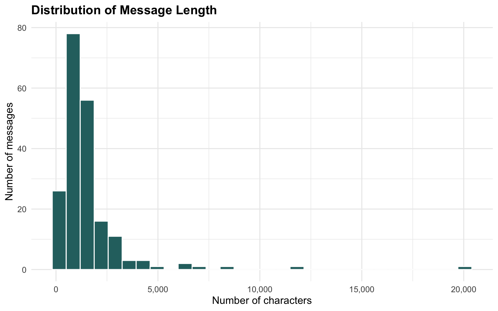
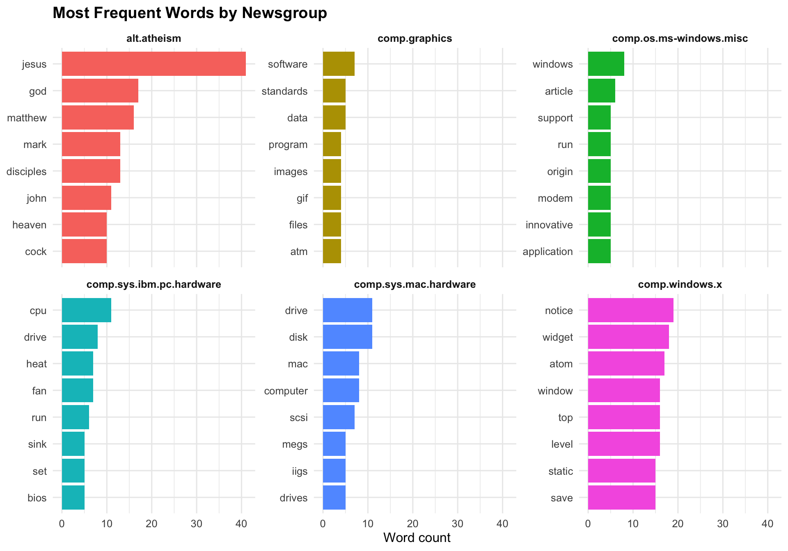
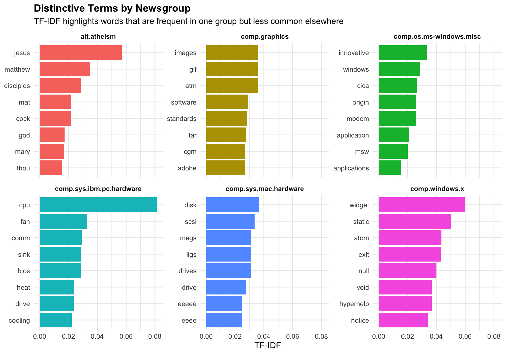
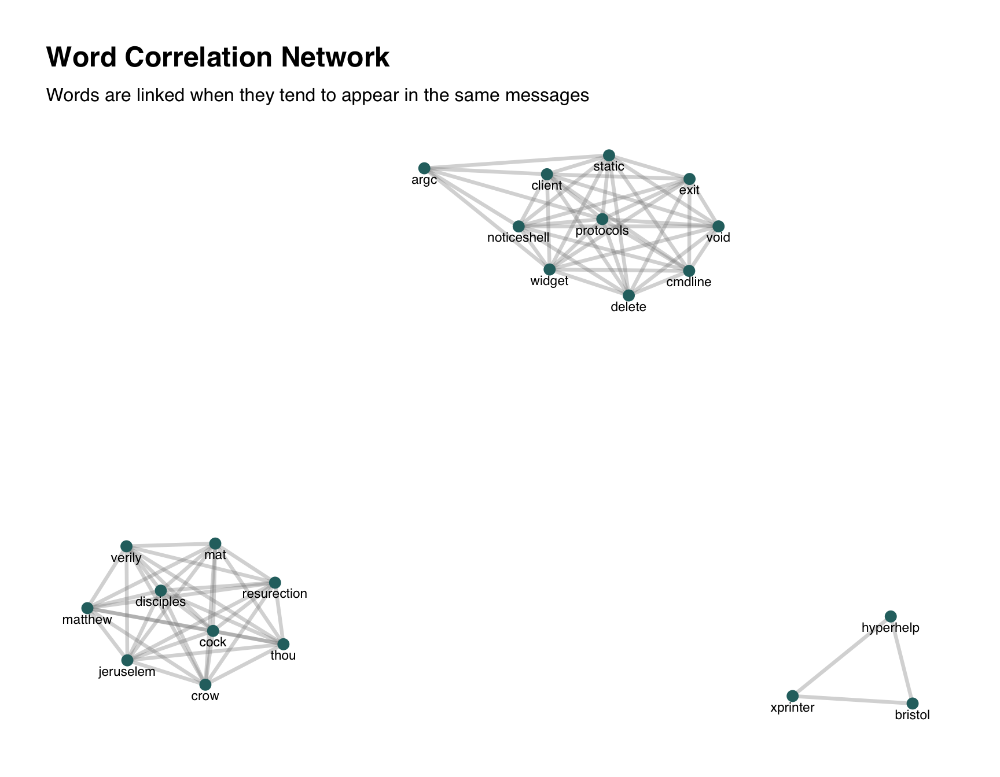
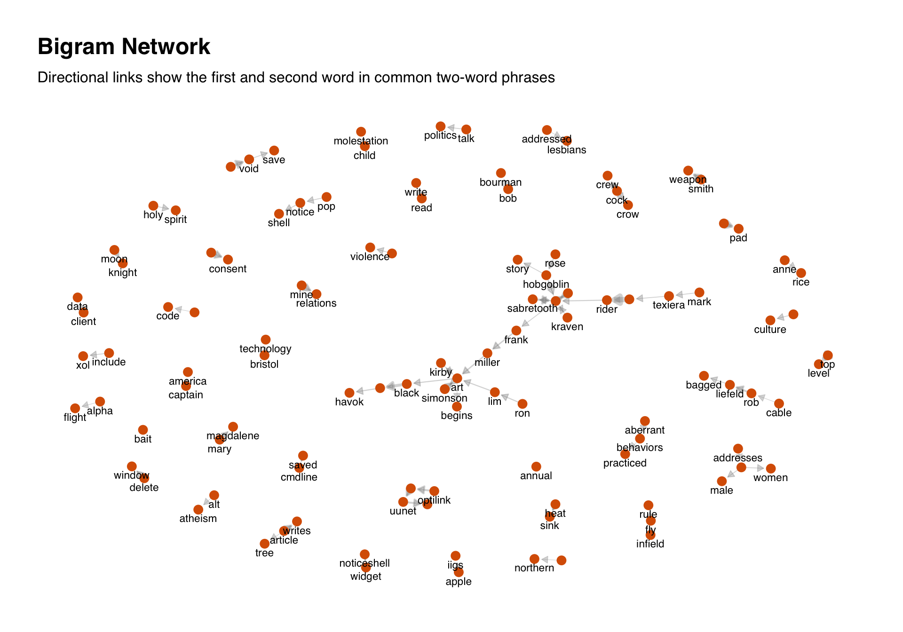
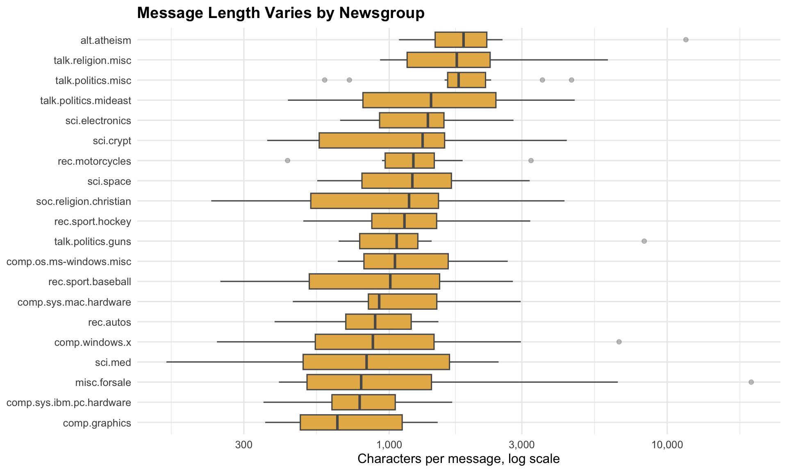

if (!requireNamespace("pacman", quietly = TRUE)) {
install.packages("pacman", repos = "https://cloud.r-project.org")
}
pacman::p_load(
tidyverse,
tidytext,
widyr,
tidygraph,
ggraph,
igraph,
DT,
scales,
knitr
)Hands-on_Ex07b
1 Visualising and Analysing Text Data with R
1.1 Overview
Text data is unstructured, so it needs to be reshaped before it can be counted, compared and visualised. The tidy text approach converts documents into one-token-per-row data, making it possible to use familiar dplyr and ggplot2 workflows.
In this hands-on exercise, the 20 Newsgroups sample is used to practise text import, cleaning, tokenisation, word frequency analysis, TF-IDF, word correlation and bigram network visualisation.
By the end of this exercise, we should be able to:
- import multiple text files from multiple folders;
- clean email-style message text;
- tokenise text into individual words and bigrams;
- remove stop words and noisy tokens;
- compute term frequency and TF-IDF;
- visualise word co-occurrence and bigram relationships as networks.
1.2 Installing and launching R packages
1.3 Importing multiple text files from multiple folders
1.3.1 Creating a folder list
The data folder contains one subfolder per newsgroup. Each file inside a subfolder is one message.
news_root <- "data/20news"
if (!dir.exists(news_root)) {
stop("The folder data/20news is missing. Please unzip 20news.zip into the data folder.")
}
news_folders <- list.dirs(news_root, recursive = FALSE, full.names = TRUE)
tibble(
folder = basename(news_folders),
messages = map_int(news_folders, ~ length(list.files(.x, full.names = TRUE)))
) %>%
knitr::kable(format = "html")| folder | messages |
|---|---|
| alt.atheism | 10 |
| comp.graphics | 10 |
| comp.os.ms-windows.misc | 10 |
| comp.sys.ibm.pc.hardware | 10 |
| comp.sys.mac.hardware | 10 |
| comp.windows.x | 10 |
| misc.forsale | 10 |
| rec.autos | 10 |
| rec.motorcycles | 10 |
| rec.sport.baseball | 10 |
| rec.sport.hockey | 10 |
| sci.crypt | 10 |
| sci.electronics | 10 |
| sci.med | 10 |
| sci.space | 10 |
| soc.religion.christian | 10 |
| talk.politics.guns | 10 |
| talk.politics.mideast | 10 |
| talk.politics.misc | 10 |
| talk.religion.misc | 10 |
1.3.2 Define a function to read all files from a folder
read_newsgroup <- function(folder) {
files <- list.files(folder, full.names = TRUE)
tibble(
newsgroup = basename(folder),
file = basename(files),
text = map_chr(files, readr::read_file)
)
}1.3.3 Reading in all messages
news_raw <- map_dfr(news_folders, read_newsgroup) %>%
mutate(doc_id = row_number())
glimpse(news_raw)Rows: 200
Columns: 4
$ newsgroup <chr> "alt.atheism", "alt.atheism", "alt.atheism", "alt.atheism", …
$ file <chr> "54256", "54257", "54258", "54259", "54260", "54261", "54262…
$ text <chr> "From: salem@pangea.Stanford.EDU (Bruce Salem)\nSubject: Re:…
$ doc_id <int> 1, 2, 3, 4, 5, 6, 7, 8, 9, 10, 11, 12, 13, 14, 15, 16, 17, 1…news_raw %>%
count(newsgroup, sort = TRUE) %>%
knitr::kable(format = "html")| newsgroup | n |
|---|---|
| alt.atheism | 10 |
| comp.graphics | 10 |
| comp.os.ms-windows.misc | 10 |
| comp.sys.ibm.pc.hardware | 10 |
| comp.sys.mac.hardware | 10 |
| comp.windows.x | 10 |
| misc.forsale | 10 |
| rec.autos | 10 |
| rec.motorcycles | 10 |
| rec.sport.baseball | 10 |
| rec.sport.hockey | 10 |
| sci.crypt | 10 |
| sci.electronics | 10 |
| sci.med | 10 |
| sci.space | 10 |
| soc.religion.christian | 10 |
| talk.politics.guns | 10 |
| talk.politics.mideast | 10 |
| talk.politics.misc | 10 |
| talk.religion.misc | 10 |
1.4 Initial EDA
Before tokenising, it is useful to inspect message length. Very short messages may contain only quoted text or metadata, while very long messages may dominate word counts.
news_eda <- news_raw %>%
mutate(
characters = str_length(text),
lines = str_count(text, "\n") + 1
)news_eda %>%
ggplot(aes(characters)) +
geom_histogram(bins = 30, fill = "#2A6F6F", colour = "white") +
scale_x_continuous(labels = comma) +
labs(
title = "Distribution of Message Length",
x = "Number of characters",
y = "Number of messages"
) +
theme_minimal(base_size = 12) +
theme(plot.title = element_text(face = "bold"))
1.5 Introducing tidytext
1.5.1 Removing header and quoted lines
Newsgroup files often include headers, signatures and quoted replies. The cleaning function below removes the first header block, removes quoted lines beginning with >, and squeezes repeated whitespace.
clean_message <- function(x) {
x %>%
str_replace_all("\r\n", "\n") %>%
str_replace(regex("^.*?\n\n", dotall = TRUE), "") %>%
str_replace_all(regex("^>.*$", multiline = TRUE), " ") %>%
str_replace_all(regex("^\\|.*$", multiline = TRUE), " ") %>%
str_replace_all("\\b[a-zA-Z0-9._%+-]+@[a-zA-Z0-9.-]+\\.[A-Za-z]{2,}\\b", " ") %>%
str_replace_all("[^A-Za-z\\s]", " ") %>%
str_squish()
}
news_clean <- news_raw %>%
mutate(text_clean = map_chr(text, clean_message))1.5.2 Text data processing
The unnest_tokens() function converts each message into one word per row. Common stop words are removed so the remaining terms are more meaningful.
data("stop_words")
news_words <- news_clean %>%
select(doc_id, newsgroup, text_clean) %>%
unnest_tokens(word, text_clean) %>%
anti_join(stop_words, by = "word") %>%
filter(
str_detect(word, "^[a-z]+$"),
str_length(word) > 2
)
glimpse(news_words)Rows: 13,781
Columns: 3
$ doc_id <int> 1, 1, 1, 1, 1, 1, 1, 1, 1, 1, 1, 1, 1, 1, 1, 1, 1, 1, 1, 1, …
$ newsgroup <chr> "alt.atheism", "alt.atheism", "alt.atheism", "alt.atheism", …
$ word <chr> "article", "mike", "cobb", "writes", "don", "book", "heresay…1.5.3 Visualising words in newsgroups
word_counts <- news_words %>%
count(newsgroup, word, sort = TRUE)
focus_groups <- news_clean %>%
count(newsgroup, sort = TRUE) %>%
slice_head(n = 6) %>%
pull(newsgroup)
top_words <- word_counts %>%
filter(newsgroup %in% focus_groups) %>%
group_by(newsgroup) %>%
slice_max(n, n = 8, with_ties = FALSE) %>%
ungroup() %>%
mutate(word = reorder_within(word, n, newsgroup))ggplot(top_words, aes(n, word, fill = newsgroup)) +
geom_col(show.legend = FALSE) +
scale_y_reordered() +
facet_wrap(~newsgroup, scales = "free_y") +
labs(
title = "Most Frequent Words by Newsgroup",
x = "Word count",
y = NULL
) +
theme_minimal(base_size = 12) +
theme(
plot.title = element_text(face = "bold"),
strip.text = element_text(face = "bold")
)
1.6 Basic concept of TF-IDF
Frequent words are not always distinctive. TF-IDF downweights terms that appear in many groups and highlights words that are unusually important to a particular group.
1.6.1 Computing TF-IDF within newsgroups
tf_idf_words <- word_counts %>%
bind_tf_idf(word, newsgroup, n) %>%
arrange(desc(tf_idf))DT::datatable(
tf_idf_words %>%
select(newsgroup, word, n, tf, idf, tf_idf) %>%
head(60),
rownames = FALSE,
options = list(pageLength = 10)
)1.6.2 Visualising TF-IDF within newsgroups
top_tfidf <- tf_idf_words %>%
filter(newsgroup %in% focus_groups) %>%
group_by(newsgroup) %>%
slice_max(tf_idf, n = 8, with_ties = FALSE) %>%
ungroup() %>%
mutate(word = reorder_within(word, tf_idf, newsgroup))ggplot(top_tfidf, aes(tf_idf, word, fill = newsgroup)) +
geom_col(show.legend = FALSE) +
scale_y_reordered() +
facet_wrap(~newsgroup, scales = "free_y") +
labs(
title = "Distinctive Terms by Newsgroup",
subtitle = "TF-IDF highlights words that are frequent in one group but less common elsewhere",
x = "TF-IDF",
y = NULL
) +
theme_minimal(base_size = 12) +
theme(
plot.title = element_text(face = "bold"),
strip.text = element_text(face = "bold")
)
1.7 Counting and correlating pairs of words
The widyr package can calculate how often two words appear in the same document. This is useful for turning text into a network.
word_correlation <- news_words %>%
add_count(word) %>%
filter(n >= 5) %>%
pairwise_cor(word, doc_id, sort = TRUE, upper = FALSE) %>%
filter(correlation >= 0.25) %>%
slice_head(n = 80)
word_correlation %>%
head(10) %>%
knitr::kable(format = "html", digits = 3)| item1 | item2 | correlation |
|---|---|---|
| cock | crow | 1 |
| cock | matthew | 1 |
| crow | matthew | 1 |
| cock | thou | 1 |
| crow | thou | 1 |
| matthew | thou | 1 |
| cock | mat | 1 |
| crow | mat | 1 |
| matthew | mat | 1 |
| thou | mat | 1 |
if (nrow(word_correlation) > 0) {
word_graph <- word_correlation %>%
transmute(from = item1, to = item2, correlation) %>%
as_tbl_graph(directed = FALSE)
set.seed(608)
ggraph(word_graph, layout = "fr") +
geom_edge_link(aes(width = correlation), alpha = 0.35, colour = "grey55") +
geom_node_point(size = 3, colour = "#2A6F6F") +
geom_node_text(aes(label = name), size = 3, vjust = 1.6, check_overlap = TRUE) +
scale_edge_width(range = c(0.3, 2), guide = "none") +
labs(
title = "Word Correlation Network",
subtitle = "Words are linked when they tend to appear in the same messages"
) +
theme_graph(base_family = "sans") +
theme(plot.title = element_text(face = "bold"))
}
1.8 Bigram analysis
Bigrams are adjacent two-word phrases. They preserve a small amount of word order, which can make the text interpretation more meaningful than individual tokens alone.
news_bigrams <- news_clean %>%
select(doc_id, newsgroup, text_clean) %>%
unnest_tokens(bigram, text_clean, token = "ngrams", n = 2) %>%
separate(bigram, c("word1", "word2"), sep = " ") %>%
filter(
!word1 %in% stop_words$word,
!word2 %in% stop_words$word,
str_detect(word1, "^[a-z]+$"),
str_detect(word2, "^[a-z]+$"),
str_length(word1) > 2,
str_length(word2) > 2
)
bigram_counts <- news_bigrams %>%
count(word1, word2, sort = TRUE)
bigram_counts %>%
head(12) %>%
knitr::kable(format = "html")| word1 | word2 | n |
|---|---|---|
| ghost | rider | 21 |
| top | level | 16 |
| bait | bait | 12 |
| black | panther | 12 |
| time | pad | 11 |
| punisher | appears | 10 |
| smith | weapon | 10 |
| static | void | 10 |
| appears | punisher | 9 |
| article | writes | 9 |
| sabretooth | appears | 9 |
| cramer | uunet | 8 |
1.8.1 Visualising a network of bigrams with ggraph
bigram_graph <- bigram_counts %>%
slice_max(n, n = 80, with_ties = FALSE) %>%
transmute(from = word1, to = word2, weight = n) %>%
as_tbl_graph(directed = TRUE)set.seed(608)
ggraph(bigram_graph, layout = "fr") +
geom_edge_link(
aes(width = weight),
alpha = 0.35,
colour = "grey55",
arrow = arrow(length = unit(2, "mm"), type = "closed"),
end_cap = circle(2, "mm")
) +
geom_node_point(colour = "#D95F02", size = 3) +
geom_node_text(aes(label = name), size = 3, vjust = 1.6, check_overlap = TRUE) +
scale_edge_width(range = c(0.2, 2), guide = "none") +
labs(
title = "Bigram Network",
subtitle = "Directional links show the first and second word in common two-word phrases"
) +
theme_graph(base_family = "sans") +
theme(plot.title = element_text(face = "bold"))
1.9 My Extension: Message length by newsgroup
This extension checks whether some groups tend to write longer messages. It is a useful caution because longer documents naturally generate more words and more possible co-occurrences.
news_eda %>%
mutate(newsgroup = fct_reorder(newsgroup, characters, median)) %>%
ggplot(aes(characters, newsgroup)) +
geom_boxplot(fill = "#E6B655", colour = "grey35", outlier.alpha = 0.35) +
scale_x_log10(labels = comma) +
labs(
title = "Message Length Varies by Newsgroup",
x = "Characters per message, log scale",
y = NULL
) +
theme_minimal(base_size = 12) +
theme(plot.title = element_text(face = "bold"))
1.10 Key Takeaways
- Tidy text analysis begins by reshaping documents into token-level rows.
- Removing stop words and obvious message metadata improves the quality of word counts.
- TF-IDF is useful when the question is about distinctive vocabulary, not only frequent vocabulary.
- Word and bigram networks reveal associations that are hard to see in a simple frequency table.
1.11 References
- R4VA chapter: https://r4va.netlify.app/chap29